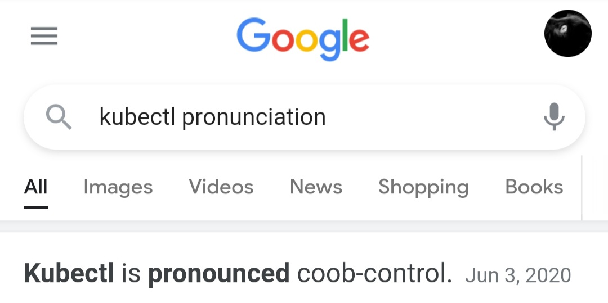

kubectl 怎么念
念法很多。就选这个吧。我也一直这么念的。

念法很多。就选这个吧。我也一直这么念的。

对 Pandas 库没有原生 SQL 支持表示遗憾，今天看到这么一个库 https://github.com/yhat/pandasql 。
它的思路比较简单粗暴，先把 pandas Dataframe 存储到一个关系型数据库（sqlite/postgresql），最后 SQL query 的结果其实是查询关系型数据库返回的结果，封装成 Dataframe 来呈现。其中数据库操作使用 sqlalchemy 这个库。
学到的知识点：locals()，globals() 这两个方法。
The globals() method returns the dictionary of the current global symbol table. https://www.programiz.com/python-programming/methods/built-in/globals
The locals() method updates and returns a dictionary of the current local symbol table. https://www.programiz.com/python-programming/methods/built-in/locals
如下代码，meat 是一个 Dataframe 变量，为何 SQL query 里能直接引用这个变量。
$ python
>>> from pandasql import sqldf, load_meat, load_births
>>> pysqldf = lambda q: sqldf(q, globals())
>>> meat = load_meat()
>>> print pysqldf("SELECT * FROM meat LIMIT 10;").head()
因为可以从 globals() 里通过符号 meat 拿到这个变量。
不定时更新中。
如前文介绍，Linux Network namespace 用于给进程创建一个新的网络栈，路由、防火墙规则、网络设备。man ip-netns：
A network namespace is logically another copy of the network stack, with its own routes, firewall rules, and network devices.
作为对 Network namespace 的实践，本文使用 ip/iptables 等命令模拟下 Docker bridge 网络，并会接触到 Network namespace，veth pair，Linux bridge，NAT 等概念。
ip命令操作 Network namespaceip netns 子命令用于操作 Network namespace。使用 add 子命令，创建一个 Network namespace。
# ip netns add netns1
查看 netns1 的网络设备（network device）。使用 exec 子命令，后接 netns1 和要执行的命令。默认有一个 DOWN 状态的 lo 设备。
因为公司有开发泄露源码在 Github，对公司声誉造成一定影响，公司层面推广起瘦终端，所有开发一起背锅 :( 。在瘦终端里，网络严格管控，vscode 下载插件都难，需要申请 IP 白名单。开发只允许在瘦终端里接触 git 仓库，只能向瘦终端拷贝文件，反之不能。这样就能防住代码泄露么？
搞笑的办法，瘦终端生成二维码，主机扫描，数据传输问题搞定。
从网络角度，怎么解决呢。我们来严肃看待这个技术问题。
实践发现，瘦终端里不能访问百度，但是能 ping 通。从 TCP/IP 的角度，瘦终端在网络上只是 TCP 传输层被流量管控了，IP 层还是畅通无阻的。
下图为 TCP/IP 的层次结构，TCP 包封装于 IP 包。

目前网站的基石是 HTTP/TCP 协议，代理也普遍是基于 HTTP/TCP 的，shadowsocks 翻墙的思路不通。
所以 ICMP 协议是否能作为代理协议呢。从封包的角度，ICMP 与 TCP 一样，也是封在 IP 包中的。
namespace 在编程语言中是一种常见的概念，C++/Clojure 中就使用 namespace 关键字来模块化组织代码。模块与模块之间互不污染，模块A有个 helloworld 的方法，模块B也可以有一个 helloworld 的方法。Java/Go 中的 package 也是同样的意义。
Linux namespaces 是 Linux 内核用于隔离内核资源的手段，进程使用隔离的内核资源保证了与其他进程之间的独立。也是 Docker 容器的底层技术（Docker 主要开发语言是 Go，container 的创建使用 C）。
Namespaces are a feature of the Linux kernel that partitions kernel resources such that one set of processes sees one set of resources while another set of processes sees a different set of resources. The feature works by having the same namespace for a set of resources and processes, but those namespaces refer to distinct resources. Resources may exist in multiple spaces. Examples of such resources are process IDs, hostnames, user IDs, file names, and some names associated with network access, and interprocess communication.